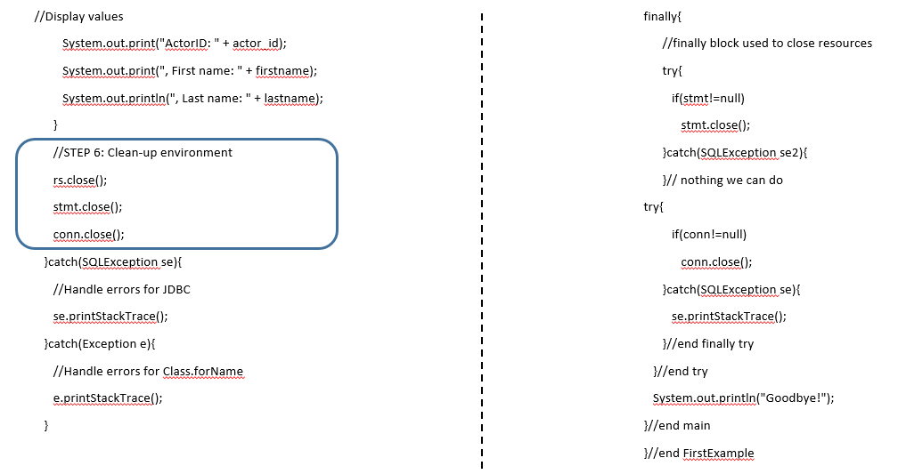
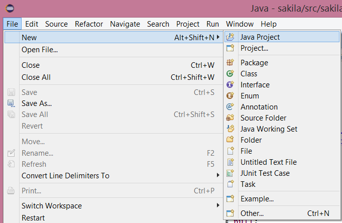
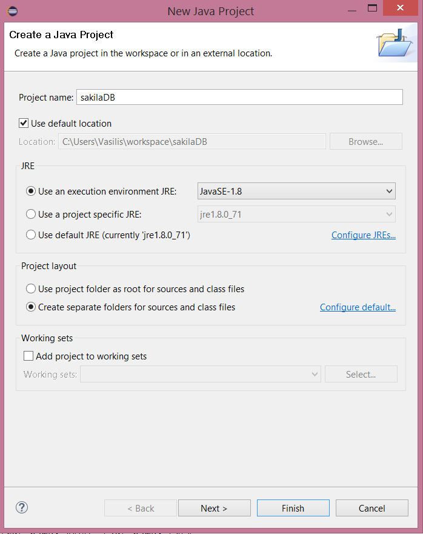
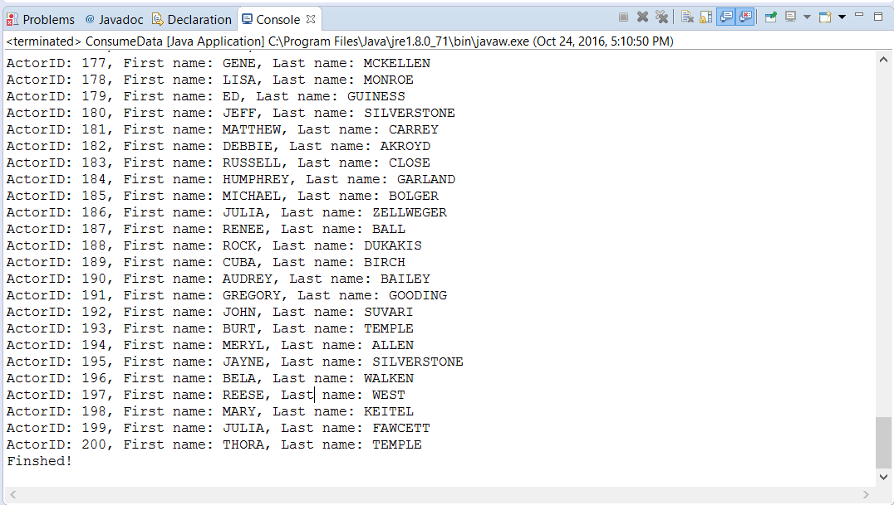

```java
package sakila;
//STEP 1. Import required packages
import java.sql.*;
public class ConsumeData {
// JDBC driver name and database URL
static final String JDBC_DRIVER = "com.mysql.jdbc.Driver";
static final String DB_URL = "jdbc:mysql://localhost/sakila";
// Database credentials
static final String USER = "root";
static final String PASS = "";
public static void main(String[] args) {
Connection conn = null;
Statement stmt = null;
try{
//STEP 2: Register JDBC driver
Class.forName("com.mysql.jdbc.Driver");
//STEP 3: Open a connection
System.out.println("Connecting to database...");
conn = DriverManager.getConnection(DB_URL,USER,PASS);```java
```java
//STEP 4: Execute a query
System.out.println("Creating statement...");
stmt = conn.createStatement();
String sql;
sql = "SELECT actor_id, first_name, last_name FROM actor";
ResultSet rs = stmt.executeQuery(sql);
//STEP 5: Extract data from result set
while(rs.next()){
//Retrieve by column name
int actor_id = rs.getInt("actor_id");
String firstname = rs.getString("first_name");
String lastname = rs.getString("last_name");
//Display values
System.out.print("ActorID: " + actor_id);
System.out.print(", First name: " + firstname);
System.out.println(", Last name: " + lastname);
}//STEP 6: Clean-up environment
rs.close();
stmt.close();
conn.close();
}catch(SQLException se){
```java
java //Handle errors for JDBC se.printStackTrace(); }catch(Exception e){ //Handle errors for Class.forName e.printStackTrace(); }finally{ //finally block used to close resources try{ if(stmt!=null) stmt.close(); }catch(SQLException se2){ }// nothing we can do try{ if(conn!=null) conn.close(); }catch(SQLException se){ se.printStackTrace(); }//end finally try }//end try System.out.println("Finshed!"); }//end main }//end FirstExamplejava


